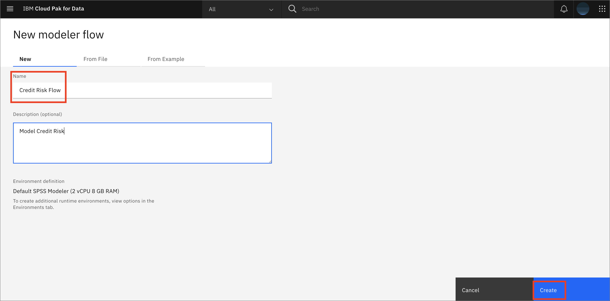
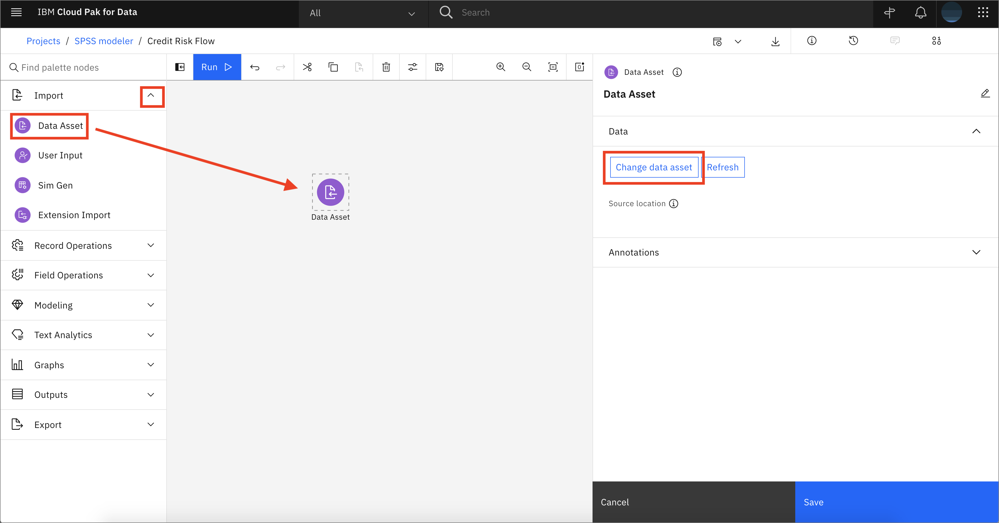

Related publishing issue: https://github.ibm.com/IBMCode/Code-Tutorials/issues/2904¶
abstract: "In this tutorial, we will use IBM Cloud Pak for Data to build a predictive machine learning model (with IBM SPSS Modeler) to decide whether a customer will default on a loan or not. IBM Cloud Pak for Data is an interactive, collaborative, cloud-based environment that allows developers and data scientists to work collaboratively, gain insight from data and build machine learning models."
authors: - name: "Scott DAngelo" email: "scott.dangelo@ibm.com"
cities: # Required=false For a full list of options see https://github.ibm.com/IBMCode/Definitions/blob/master/cities.yml. Use the slug value found at the referenced link to include it in this content.
completed_date: "2020-02-25"
components: - "cloud-pak-for-data" - "spss-modeler"
draft: false ignore_prod: false excerpt: "In this tutorial, we will use IBM Cloud Pak for Data to build a predictive machine learning model (with IBM SPSS Modeler) and decide whether a customer will default on a loan or not. IBM Cloud Pak for Data is an interactive, collaborative, cloud-based environment that allows developers and data scientists to work collaboratively, gain insight from data and build machine learning models."
last_updated: "2021-07-22"
meta_description: "Build a predictive machine learning model quickly and easily with IBM SPSS Modeler." meta_keywords: "machine learning, AI, IBM SPSS modeler, IBM Cloud Pak for Data"
meta_title: "Build a predictive machine learning model with IBM SPSS Modeler"
primary_tag: "analytics"
related_content: # Required=false Note: zero or more related content - type: tutorials slug: Fraud Detection with SPSS modeler https://developer.ibm.com/tutorials/fraud-detection-with-spss-modeler/ - type: tutorials slug: Build, train, and evaluate a machine learning product-based classifier on a customer profile https://developer.ibm.com/tutorials/promoting-financial-products-to-bank-customers/
subtitle: "Tap into data assets and modern applications with ready-to-use algorithms and models"
tags: - "analytics"
title: "Build a predictive machine learning model quickly and easily with IBM SPSS Modeler"
type: tutorial
also_found_in: - "/learningpaths/cloud-pak-for-data-learning-path/"
In this tutorial, we will use IBM Cloud Pak for Data to build a predictive machine learning model with IBM SPSS Modeler and decide whether a bank customer will default on a loan. IBM Cloud Pak for Data is an interactive, collaborative, cloud-based environment that allows developers and data scientists to work collaboratively, gain insight from data and build machine learning models.
Learning objectives¶
After completing this tutorial, you will learn how to:
- Upload data to IBM Cloud Pak for Data.
- Create an SPSS Modeler flow.
- Use the SPSS tool to inspect data and glean insights.
- Modify and prepare data for AI model creation using SPSS.
- Train a machine learning model with SPSS and evaluate the results.
Prerequisites¶
Estimated time¶
Completing this tutorial should take about 30 minutes.
Steps¶
- Create a project and upload the data
- Create an SPSS Modeler Flow
- Import the data
- Inspect the data
- Data preparation
- Train the ML model
- Evaluate the results
Step 1. Create a project and upload the data¶
If you have not already created a project for this learning path, follow the instructions below to create one. Otherwise, you can skip to Create an SPSS Modeler Flow.
Create an IBM Cloud Pak for Data project¶
In Cloud Pak for Data, we use the concept of a project to collect / organize the resources used to achieve a particular goal (resources to build a solution to a problem). Your project resources can include data, collaborators, and analytic assets like notebooks and models, etc.
- Go the (☰) navigation menu and under the Projects section click on
All Projects.

- Click on the
New projectbutton on the top right.

- Select the
Analytics projectradio button and click theNextbutton.

- Select
Create an empty project.

- Provide a name and optional description for the project and click
Create.

Download the dataset for this experiment and load it into you project.¶
-
Download the german_credit_data.csv dataset.
-
Upload the dataset to the analytics project by clicking on Browse and selecting the downloaded file.
Step 2. Create an SPSS Modeler flow¶
-
From the Project home page, click Add to Project + and choose Modeler flow.

-
Give the flow a meaningful name, such as
Credit Risk Flow, then click Create.
Step 3. Import the data¶
-
In the left-hand pane, expand Import, then drag and drop a Data Asset node on the canvas. Double-click on the node that was dropped on the canvas and click Change data asset.

-
On the Assets page, open the Data Assets tab, choose the german_credit_data.csv file you previously uploaded and click Select.

-
When the data is imported, click Save.

Step 4. Inspect the data¶
-
To gain insight into your data, open the Output tab and drag and drop the data audit node onto the canvas. Hover over the Data Asset node that was dragged and dropped on the canvas earlier, and it should show a blue circular icon on the side. Click on the icon and drag over to the Data Audit node. This will connect the two nodes.

-
Hover over the Data Audit node and click on the three vertical dots to open the menu for the node. Alternatively, right-click on the Data Audit node and click Run.
-
Once it is ready, the output can be viewed by opening the Outputs menu on the right. Click on the "eye" icon to open the Data Audit (Data Audit of [21 fields]) to view statistics about the data.
![Open Data inspection] (images/spss-data-inspection-2.png)
-
Click X in the upper right corner to close the window.
Step 5. Data preparation¶
-
Expand the Field Operations tab and drag and drop the Type node onto the canvas. Connect the Data Asset node with the Type node, then double-click on the Type node to make the necessary configurations.
-
Click on Read Values. Once the read operation completes, check that the measure and role for each field is correct. Change the role of Risk from
InputtoTarget, then click Save to close the tab.
Step 6. Train the ML model¶
-
Expand the Modeling tab, then drag and drop the Random Forest node onto the canvas. Connect the Type node to the Random Forest node. The Random Forest node will automatically be renamed Risk.

-
Right-click on the Random Forest node and click Run. When the execution is done, you will see a new golden nugget-like Risk node added to the canvas.
-
Right-click on the new Risk golden nugget node and choose Preview to inspect the output results.

Step 7. Evaluate the results¶
-
Expand the Outputs tab, then drag and drop an analysis node onto the canvas. Connect the Risk golden nugget node to the Analysis node. Right-click on the Analysis node and click Run.

-
From the Outputs tab on the right, click on the "eye" icon next to analysis of [Risk] to gain insight into the accuracy of the results.


-
Click on Return to flow to go back.
-
Expand the Graphs tab, then drag and drop the Evaluation node onto the canvas. Connect the Risk golden nugget node with the Evaluation node. The Evaluation node will automatically be renamed $R-Risk. Right-click on the node and click Run.

-
Double-click on the "eye" icon next to the $R-Risk output (evaluation of [$R-Risk]: Gains) to visualize the graph for the Gains. This will give the Predicted Positive Rate (or support of the classifier) vs. True Positive Rate (or sensitivity of the classifier).

Summary¶
This tutorial demonstrated a small example of creating a predictive machine learning model on IBM SPSS Modeler on IBM Cloud Pak for Data. It went over importing the data into the project and the modeler flow, and preparing the data for modeling, then over the steps of choosing an appropriate algorithm for the data and training a prediction model. The last step explained how to visualize and evaluate the results of the trained model.